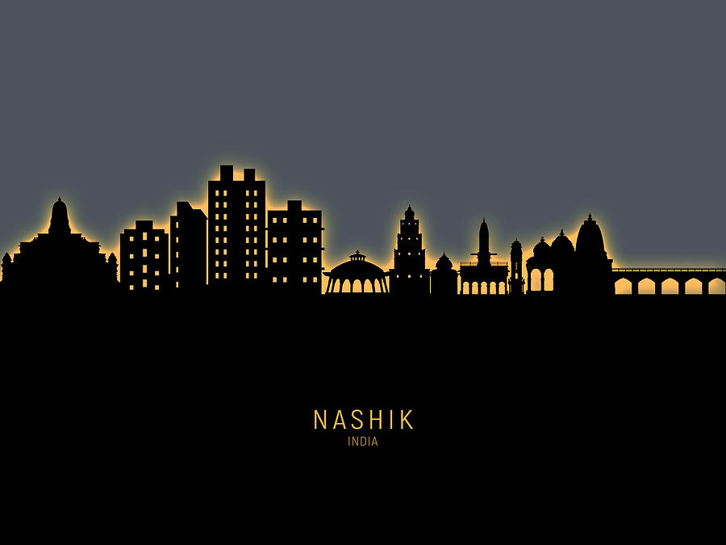
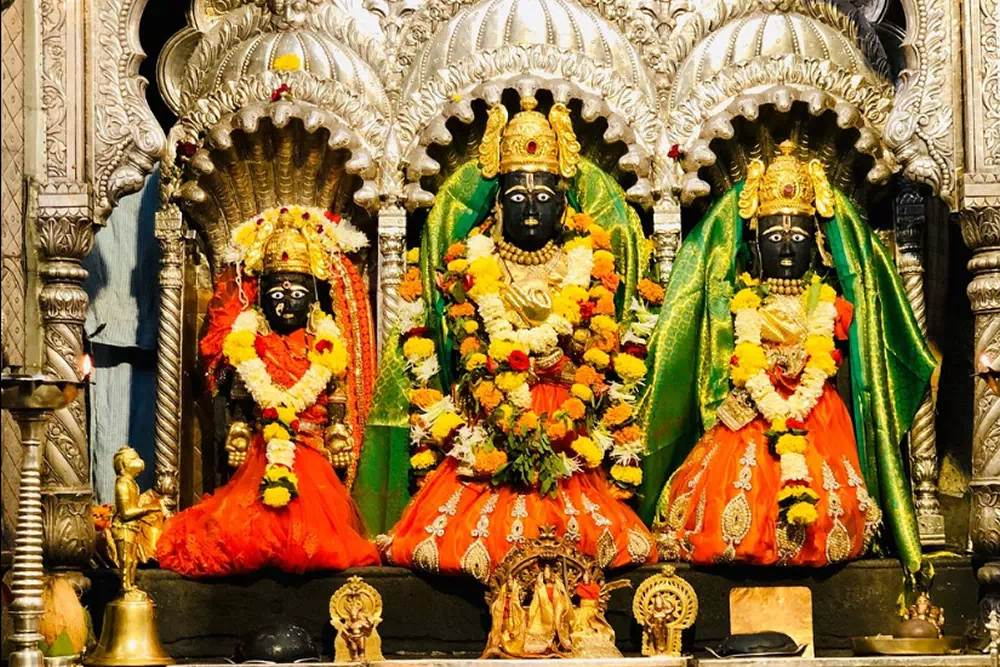

Historical Importance
Nashik, nestled along the banks of the Godavari river, is a city steeped in both history and spirituality. Here's a brief glimpse into its rich tapestry: Ancient Era: Nashik's earliest mentions date back to the 3rd century BCE, finding its place in the Mauryan Empire under Ashoka. The Satavahana dynasty (2nd century BCE - 2nd century CE) left a significant mark, establishing trade routes and patronizing Buddhist cave carvings. Medieval & Mughal Period: The city came under various rulers over the centuries, including the Western Kshatrapas, Abhiras, Chutus, and Yadavas. Each dynasty left its imprint on the city's architecture and culture. During the Mughal reign, Nashik was known as "Gulshanabad" or "Rose City." Colonial Era & Beyond: With the British Raj, Nashik became a major cotton trade center. Post-independence, it emerged as an industrial hub and a renowned pilgrimage destination.
Spiritual Importance
Hindu Mythology: Nashik holds immense significance in Hindu mythology. It's believed that Lord Rama, Sita, and Lakshmana spent part of their 14-year exile here. The Panchavati area is said to be the site of Sita's abduction by Ravana. Holy City: Nashik is one of the four cities hosting the Kumbh Mela, the largest religious gathering in the world, held every 12 years. The Godavari River, considered sacred, draws millions of pilgrims for ritual baths and spiritual rejuvenation. Temples: The city boasts numerous ancient and modern temples, including the Ram Janaki Temple, Someshwar Temple, and Muktidham. These temples attract devotees throughout the year, seeking blessings and immersing themselves in the city's vibrant spiritual aura.